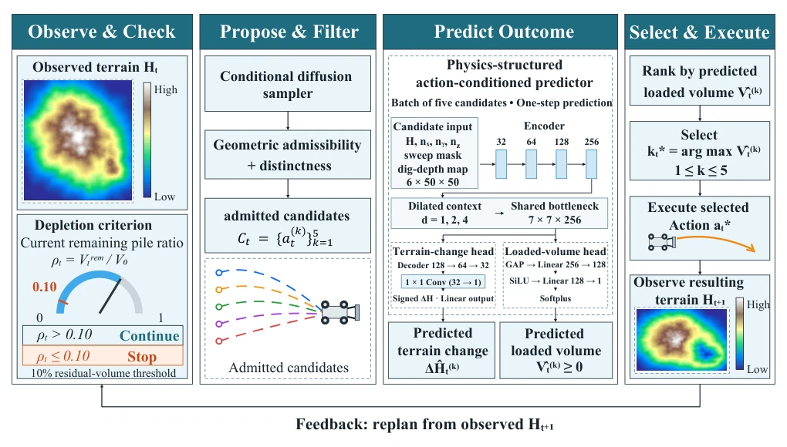
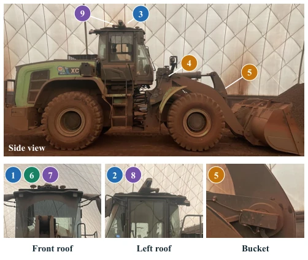
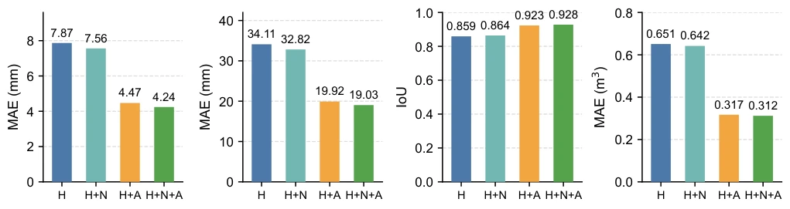
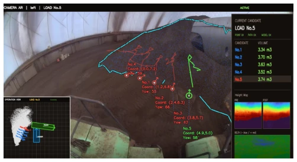

This paper equips wheel loaders with the 'perspective' of a 'World Model', attempting to evolve from 'blind digging' to 'calculating before digging'. The core highlight lies in that it does not rely solely on trial-and-error like certain RL papers, but introduces a frozen predictor to 'rehearse' the consequences of five scoops before actual execution, selecting the one that yields more. In simulation, this approach indeed reduced the scoop count by 17%, and real-vehicle deployment successfully validated the closed loop, proving the feasibility of 'prediction as decision' in construction machinery. However, the drawbacks are obvious: this model is a 'specialist' rather than a 'generalist'; different simulators or even real-vehicle data require separate training, lacking zero-shot transfer capability; moreover, the real-vehicle experiment sample size is too small, so the so-called efficiency improvement cannot be statistically confirmed, proving more that it 'can run' rather than 'runs steadily'. Packing complex physical prediction onto a Jetson Orin to run in 72ms is indeed technically demanding, but there is still a distance from large-scale commercialization.
Continuous digging of wheel loaders is a typical sequential decision-making problem, where each scoop alters the terrain, subsequently affecting the feasibility and reward of subsequent actions, resulting in highly coupled decisions [1]. Existing systems mostly adopt architectures with separated perception, planning, and control, or rely on Reinforcement Learning (RL) to train policies in 'dream environments' [8]-[10]. However, these methods have obvious shortcomings: first, RL strategies often lack interpretability and struggle to guarantee safety in long-horizon tasks; second, existing World Models are mostly used for offline planning or as 'surrogates' for training environments, with few directly serving as online decision modules to evaluate the consequences of multiple candidate actions in real-time [8]-[10]. Furthermore, traditional methods struggle to accurately quantify the trade-off between terrain change and loading volume prior to action execution, leading to inefficiency during continuous depletion. This paper aims to fill this gap by deploying the World Model directly as an execution-time decision module, guiding real-time selection through predicting candidate action consequences, thereby addressing the 'blind trial-and-error' issue in continuous digging.
This paper proposes the World Action Model (WAM), centered on a 'Perceive-Propose-Predict-Select-Execute' closed-loop framework. The overall process is as follows: First, based on current terrain observations, the system utilizes a Conditional Diffusion model to generate a multimodal set of bucket action candidates; Second, infeasible (e.g., collision, exceeding work range) or duplicate actions are filtered out via geometric rules, retaining 5 legal candidates; Next, the key step arrives—the frozen 'physically structured' World Model performs batch prediction on these 5 candidates, with inputs including terrain height maps, normal vectors, and action-derived sweep masks and excavation depth maps, outputs being terrain change amount (signed) and loading volume; Finally, the system executes the action with the largest predicted loading volume and repeats this cycle based on newly observed terrain until the remaining soil pile volume is below 10%. The innovations lie in: 1. Proposing a physically structured action-conditioned predictor, utilizing the DigNet++ Large architecture to jointly predict terrain change and volume, particularly emphasizing the dominant role of action-derived sweep and depth maps on prediction accuracy; 2. Designing a 'Propose-Filter-Predict' decoupled architecture, combining the diversity of diffusion models with the determinism of geometric constraints, and using the World Model for consequence ranking rather than relying on heuristic rules; 3. Achieving a complete closed-loop deployment from simulation to real vehicle, realizing low-latency inference on Jetson AGX Orin.

Fig. 1. Overview of WAM for continuous pile depletion. Given the observed terrain, a conditional diffusion model proposes scoop actions, which are filtered for geometric admissibility and distinctness. A frozen action-conditioned world model jointly predicts signed terrain change and loaded volume for the admitted candidates. WAM executes the candidate with the highest predicted loaded volume and replans using the newly observed terrain. The cycle repeats until the remaining pile volume is at most 10% of its initial value.
Experiments were conducted in the MinSlope simulation environment (32 geometrically non-overlapping test sets) and on a real wheel loader (XCMG XC958EV). Baselines include Diffusion-direct (executing the first diffusion candidate directly), Geometric-heuristic (based on geometric heuristics), and Soft Actor-Critic (SAC) reinforcement learning strategy. Evaluation metrics include completion count, average scoop count (N10), remaining volume percentage, and average loading volume. Results show that WAM outperforms SAC with a completion rate of 32/32 (compared to 29/32), reducing the average scoop count from 651.8 to 540.6 (an improvement of 17.1%), and increasing the average loading volume from 4.03 to 4.78 cubic meters. Ablation experiments indicate that introducing action-derived sweep and depth maps significantly reduces prediction error (MAE reduced by approximately 43%), and the spatial range of ROI-10 achieved the best balance between accuracy and latency. Real-vehicle deployment verified the closed-loop feasibility of the system under real sensor noise, with inference latency controlled at 72.4ms.

Fig. 2. Real-loader platform and sensor configuration. LiDARs (1–3) and fisheye cameras (7–9) provide surround-view pile observations. Boom and bucket angle sensors (4 and 5, respectively) measure articulation angles, while the front-facing pinhole camera (6) supports image-based loaded- volume estimation.

Fig. 3. Input ablation at fixed ROI-10. H denotes the terrain height map, N the three surface-normal channels, and A the action-derived sweep mask and dig-depth map.

Fig. 4. Onboard visualization during real-loader deployment. Five candi- date scoop trajectories are overlaid on the camera view, with the selected candidate highlighted in green. The right panel displays candidate volume predictions and terrain-map visualizations.